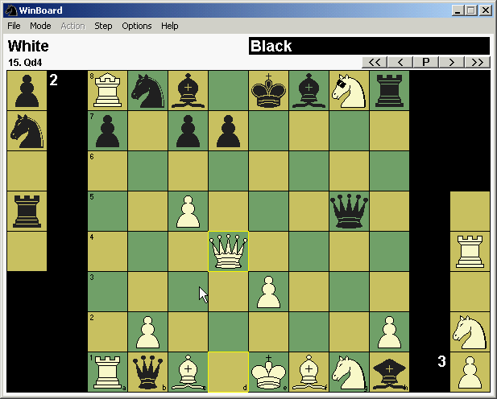
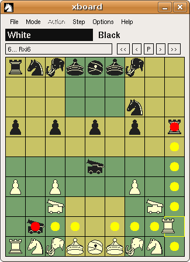
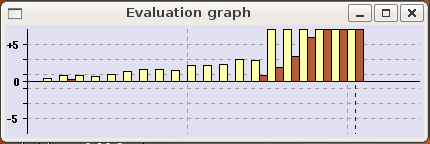
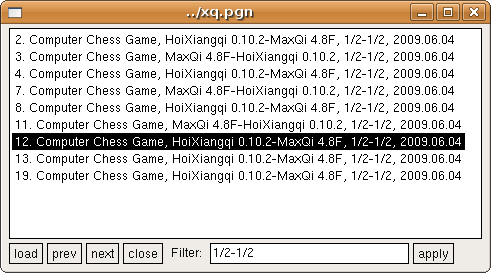
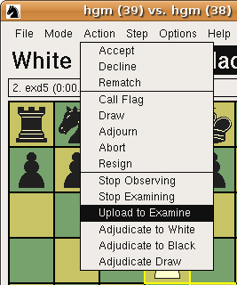
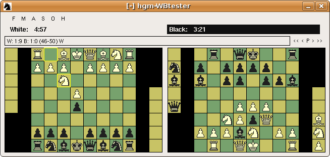

What is new in WinBoard / XBoard 4.5.0?
General New Features
|
XBoard -> WinBoard Convergence
ICS-client Enhancements
|

|
The clocks are now displayed counting down in fixed-time-per-move time controls.
This mode of time control can still be selected through the command-line
option -st (-searchTime), but in WinBoard it is now also possible
to select it interactively from the Options -> Time-Control menu dialog.
As soon as a player's turn comes up, his clock will be reset to the
selected time per move, and start counting down.
If he does not move before the clock reaches zero,
a time loss can result.
XBoard and WinBoard now allow you to explore variations on a given game,
much like you can do on an Internet Chess Server in "examine" mode.
You can do this in Edit Game mode,
for the purpose of annotating the game with alternative variations,
or in Analyze mode, where an engine evaluates the various branches.
It works like this: you can use the < and > buttons
(or equivalently, the Left and Right arrow keys,
or the Step -> Forward and Step -> Backward menu items),
to step through a game or variation.
When you are not at the end of the game, and start playing moves,
XBoard would normally truncate the game at that point,
and append the new move.
However, you can now indicate that the entered move starts a new variation
by keeping the Shift key pressed while entering it.
XBoard then stores the tail of the game in memory, rather than discarding it.
You can then continue the game along a new line of play,
and the arrow keys will step you through that new line
(the "current variation"),
When you have studied the variation to your satisfaction,
you can then use the Step -> Revert menu to recall the previous variation,
i.e. the one that XBoard stored last because you altered a move in it.
This brings you back to the position where you played the alternative move,
and puts back the original tail of the game,
so that the arrow keys now step you through that.
The later variation you now abandoned will be irretrievably lost,
but as an alternative to 'Revert' there is a new 'Annotate' menu item,
which would add that variation as a comment
(in PGN variation format, i.e. between parentheses)
to the next move.
So you will see the alternative to the played move
displayed in the comment window as soon as you play that move.
This can be repeated any number of times,
so you can make variations on variations
(leading to nested variation comments in the PGN).
PGN files can contain (nested) variations between parentheses.
WinBoard and XBoard have always treated such variations like comments,
adding them to the move after which they occurred,
and displaying them in the comment popup.
In WinBoard as well as XBoard it is now possible to right-click
such a variation in the comment popup,
in Edit Game or Analyze mode,
on which the current line will be shelved,
and the clicked variation will take over its place.
(See Exploring Variations above.)
The user can then play through the variation on the board in the
way he would normally play through the main line of the game.
When he is done, he can use Revert in the Step menu
to resume the main line.
|
Previous versions of XBoard and WinBoard did not allow you to edit the holdings
in Edit Positon mode, which made this mode useless for setting up
crazyhouse or bughouse positions.
(You could still paste a bughouse FEN containing the holdings in brackets
between the board and side-to-move fields.)
The new version does allow such editing.
When you drag a piece into the holdings file,
it automatically puts it on the square designated for it,
and adapts the piece counts consistently.
When you drag it out of the holdings, the piece counts are decreased,
and if non-zero the other copies of the piece will stay in the holding
while you take one to the board.
It is even possible to add pieces in the holdings using the piece menu.
Setting an empty square on top of a stack of pieces,
will delete all these pieces.
|

|
XBoard and WinBoard now allow you to see the position the engine thinks
it will end up in (i.e. the positon at the end of the Principal Variation),
by right-clicking the board.
When you then move the mouse vertically, keeping the right button pressed,
it will step through all the positions of the PV that ly between this
end position and the current game position on which the engine is thinking
or analyzing.
This 'PV walk' will continue until you either release the right button,
or the engine moves,
after which the board display will revert to the current game position.
On right-clicking the board,
you will always get to see the last PV the engine produced as thinking output.
(Show Thinking must be on for this feature to work.)
This can be a PV from before the engine made the move,
but if the engine is pondering,
it will in general be a PV from its ponder search.
In Two-Machines mode, you will get to see the PV of the
engine that is currently thinking.
You can also call up a PV in the board display by right-clicking
the Engine-Output window.
In this case you will get to see the PV that you clicked on.
So you can select from which engine you will see the PV,
but also walk through PVs of lower depth than the most recent one.
If the engine is in multi-PV mode,
you can select one of the alternative variations.
This also works for PVs received through an ICS from the opponent,
captured by the -autoKibitz option to the Engine-Output window.
Also in this case, the selected PV will remain displayed as long
as you keep the right mouse button down,
even when the engine in the mean time produces new lines
of thinking output.
(But not if it actualy moves; then you revert to the game.)
The line you selected will be highlighted in the Engine-Output window.
If a selected PV from before the engine moved starts with
a different move than was actually played,
the retraction of the played move is inserted before the PV.
This new feature interferes with the historic usage of the right mouse button,
namely the summoning up of the (now deprecated) piece-drop menu
in crazyhouse and bughouse.
For people that still want the old behavior,
an option -dropMenu true|false is provided.
The default value of this option is false,
but by setting it, the old behavior is restored,
and the PV display on right-clicking the board disabled.
|
Experienced Chess players will not need it, or even dislike this option,
but it might be useful to a beginner.
And even an experienced Chess player might appreciate it
when he plays a variant he is not so familiar with:
XBoard and WinBoard can now indicate the possible locations a piece can move to.
When you switch this option on,
as soon as you 'pick up' a piece with the mouse,
(i.e. left-click it, for as long as you keep the left mouse button down),
XBoard will indicate all the squares that piece can move to with a fat dot.
For captures, it will use another color (the -premoveHighlightColor, normally red)
than for non-captures (where it uses the -highlightColor, normally yellow).
This feature is only active with the option -showMoveTargets true
(stored in the settings file),
but can then still be controlled with the option -highlightDragging,
which also has an item in the Options menu,
so you can quickly switch it on and off.
Furthermore, legality testing must be on for XBoard to know how the piece moves.
In variants with mandatory capture (suicide, losers, giveaway)
it works a bit different:
if the piece you pick up has a capture it is still indicated in red,
but as non-captures with this piece are then automatically illegal,
the yellow dots are used to indicate captures by other pieces.
This can be handy to quickly alert you when you overlooked a capture:
when you pick up another piece than the one who must capture,
you will not see the expected non-capture moves of that piece light up,
but in stead see some yellow dots on enemy pieces appear.
One other peculiarity in variants is that XBoard implements some pieces
occurring in variants as 'wildcard pieces', that are allowed to do any
move even when legality testing is on.
(To facilitate playing exotic variants without switching legality
checking off completely.)
For such a piece, a red dot on the starting square of the piece itself
will appear.
Drop moves (e.g in crazyhouse) will not be indicated.
|

|
Normally an engine produces only a single PV for each move it plays.
Some engines can operate in multi-PV mode, however,
where they produce mutiple lines with an exact score.
This is more a matter of the engine than the GUI,
but the new XBoard and WinBoard have a tiny improvement to help
interpretation of multi-PV engine output.
In stead of displaying the Thinking-Output lines in the
Engine-Output window strictly in the order that they came in,
XBoard now sorts lines of the same depth by score,
so that the line of the highest score (the true PV)
is always displayed on top.
In practice this requires new lines to be inserted not at the top,
(as always happened in earlier versions),
but can be inserted somewhat lower down if their score was lower.
Not a big deal, but it helps to get a more quiet display.
The original order, which usually is of less importance,
can aways be deduced from the time or number of nodes displayed with the line.
|

|
XBoard now has a new auxilliary window (which WinBoard already had for years),
for displaying the engine score(s) as a function of move number as a graph.
Clicking a point on this graph will bring you to the corresponding
position in this game.
(I.e. it will display the position on the board like you moved there
with the arrow keys.)
Like the other windows, the Evaluation Graph can be sized and moved with the mouse,
and its size and psition can be determined by command-line options,
which are saved in the settings file.
By compiled-in default XBoard starts with this window open,
but closing it once and saving the settings is enough to change that for future sessions.
|
There is one novelty in the way WinBoard and XBoard handle their settings files.
It has always been possible to have one settings file specify another.
The contents of that settings file would simply be substituted at the place where you refer to it
with the -settinngsFile option (-ini, for short).
But the saving of settings then used to still go to the original settings file.
This should be considered a bug, really, and has now been fixed.
The settings file to which you save now will be the last one that was encountered in an -ini option
(and did actually exist).
This change makes new, very versatile use of the settings files possible,
for instance to give every user its own, private settings file.
So "-settingsFile FILENAME" is a way to redirect saving of settings to an existing settings file.
The option "-saveSettingsFile FILENAME" has been added as a way to specify where to save settings
without any options being read, and without the need for a file of that name to already exist.
The settings file name specification can now contain symbolic references to user-dependent file names,
such as '%HOMEPATH%' for WinBoard and '~' for XBoard.
For WinBoard, any environment variables at the beginning of the path names will be recognized and expanded.
You could, for instance, also use %HOMEDRIVE%\%HOMEPATH%\winboard.ini,
so that people will get their private settings files in (say)
C:\Documents and Settings\<USER NAME>\winboard.ini.
The pre-configured winboard.ini in the binary install now will redirect the
reading and saving of settings to %APPDATA%\winboard.ini, which on most Windows systems would
translate to C:\Documents and Settings\<USER NAME>\Application Data\winboard.ini.
So people used to editing their winboard.ini file, beware:
you now have to look for that in a completely different place!
Note that this mechanism of redirection an be nested,
and even on a system where a user has no access to the master settings file,
and is not comfortable with the location of his private settings file,
he could use the -settingsFile option in the latter
to order a second redirection to a location where he would like it.
There are in fact novel configuration tricks one can play using such redirection.
If you are not happy with the defaults of somem volatile options,
(i.e. options that are not sved with the settings, so that they reset to their defaults the next session),
you can change them by editing the required volatile options into your primary user settings file.
Because this primary users settings file will never be overwritten when you redirect the settings file away from it,
the volatile options in there will stick.
And when you write settings for persistent options in that primary file
after the -settingsFile option that redirects reading to the settings file where you save,
these will overrule the saved options,
so that effectively you turn those persistent options in volatile ones with a default chosen by yourself!
XBoard now can save its settings on a file,
like WinBoard already does for years.
The format in which the settings are stored is the same as that of the command line,
except that all options are on separate lines.
The settings can be saved on user command (from the Options menu),
as well as automatically on exit, under control of an option -saveSettingsOnExit,
which is itself saved in the file.
Its value can be changed from the Option menu.
The contents of the default settings file
(/etc/xboard/xboard.conf for XBoard)
will be prefixed to the command line,
so that the latter overrules any settings in the file.
Furthermore, both the settings file and the command line
can contain options that refer to other settings files:
-settingsFile filename (or its shorthand -ini filename)
and @filename both cause the contents of the mentioned file to be inserted in that place.
In the case of -settingsFile the filename is also remembered as the place
to save the settings.
The standard install of XBoard uses a -saveSettingsFile and a -settingsFile option
in the default settings file to divert loading and saving to a user-specific file
~/.xboardrc in the user's home directory.
The system adminitrator can the use the default settings file /etc/xboard/xboard.conf
to specify default settings for xboard that he wants to deviate from the compiled-in defaults.
As the -settingsFile option that includes the user settings is at the end of the
default settings file, the user settings will overrule such system-wide defaults.
The settings include the open/closed status of the auxiliary windows
(Engine Output, Move History, Evaluation Graph),
and their position and size.
So XBoard will open in the same window configuration and layout
as the previous time you left it,
when you have Save Settings on Exit on.
Not all options are saved in the settings file.
Some options that are considered unlikely to need the same values next time, are 'volatile'.
This applies or instance to the engine names (-fcp, -scp) and accompanying info
(-fd, -firstXBook, -fUCI), or the selected variant.
These options will thus revert to the compiled-in or system-wide defaults
in the next session.

|
Makruk is a form of Chess played in Thailand,
by about 2 million people, which makes it one of the World's major
Chess variants.
WinBoard / Xboard now supports Makruk:
it knows how the pieces moves, that Pawns promote on the 6th rank,
and how to set up the initial position (with Pawns on the 3rd rank).
Just start XBoard with the option "-variant makruk",
or select it from the "File -> New Variant" menu.
The letters used in SAN and PGN are M for the Queen replacement
(for the Thai name "Med"),
which moves one step dagonal, as in Shatranj,
and S for the Bishop replacement
(which moves like the Silver General from Shogi).
The latest version of Fairy-Max (4.8o) supports Makruk as a
pre-programmed variant.
So it can be used as an engine to play this game against the computer.
Another variant that has been added is Seirawan Chess.
In this variants the players start with two un-orthodox pieces in hand,
which can be 'gated' onto the board when a piece is developed
from the back rank (appearing on the square that piece evacuated).
In XBoard such moves can now be entered by first selecting the
piece you want to gate from the holdings,
and then perform your move on the board.
When you drag a back-rank piece, you will immediately see
the gated piece appearing from under it.
Gating moves use SAN (orlong algebraic) promotion notation.
|
The XBoard Game-List window now includes a "Filter" field
(like WinBoard has),
where you can type any text string.
The display of the Game List will then be limited to those lines
containing the given string. So if you want to see only drawn games,
like the screenshot example shown here,
you can put "1/2-1/2" in the filter, an press the "Apply" button
(or type <Enter>).
Of course you have to make sure that the game result is actually
amongst the items that are displayed in the Game List lines.
(This can be controlled with the -gameListTags option.)
|

|
This feature is very convenient when you are dealing with large game lists.
As the 'result comment' is one of the items you can select for
display in the game list,
it is for instance very easy to find time losses, false claims or
illegal moves in your tournaments.
Just filter on the phrases "on time", "False" or "Illegal",
and only the games appear in the list that ended that way.
You can also use it to easily pick out the games of your own engine from the
PGN file of a large tournament like ChessWar.
Selecting the game to load from the list can now also be done
in XBoard using the arrow keys (and <Home>, <End>),
which have been given key bindings to the "prev" and "next" buttons
in the Game List dialog.
|
The -keepAlive option in WinBoard and XBoard now not only serves
to prevent you from being automaticaly logged out by the ICS,
(be careful not to abuse that!),
but now is also checking if the ICS is still responding.
If there is no message from the ICS at all in reaction to the 'date'
command that WinBoard sends to 'ping' it by the time the next 'date'
command is sent, WinBoard will conclude the connection has been
broken without the proper notification by the system,
and performs a fatal error exit.
You can the use a script to have WinBoard automatically
establish a new connection, and login again.
|
XBoard now has a dialog in its Options menu to select the PGN tags
that will be displayed in the Game List,
similar to that of WinBoard.
The tags can be selected and ordered in a user-friendy way,
by selecting them with the mouse, and moving them auround
with the up and down buttons.
The newly selected layout wil become effective
the next time a new Game List is made.
This can be because you open a new file with multiple games in it,
or because you re-open the Game-List window.
|

|
To claim a draw that will only become claimable after your move,
different ICS have different mechanisms.
On FICS you have to write "draw MOVE" on the same line.
ICC does not understand this, but will count a draw offer made through
a plain "draw" command before your move count as a draw claim
after that move when this move creates a third repetition or
a 50-move draw.
The ICC mechanism did not need special support,
but WinBoard and XBoard now also support the FICS mechanism.
You will have to trigger it the same way as doing things on ICC:
first offer the draw, then do the move.
XBoard will check now for any move (by user or engine) if it will create
a claimable draw.
And if it does, while the user or engine have just offered a draw,
it will first send the move to the ICS 'FICS fashion',
and after that it sends the plain move
(to accomodate ICS that do not understand this).
This should provide a secure way to claim the draw.
In connection with this patch, the adjudications
were made to work in any non-ICS game, not only in Two Machines mode.
(For ICS play the ICS of course decides.)

|
WinBoard and XBoard now support a seek graph.
This graph can appear in place of the board when you are
logged on to an ICS, and not playing or observing a game.
When you click the board in this situation,
a 'sought' command will be sent to the ICS to fetch the list of
seek ads (without you seeing it).
This list will then be represented as a 2-dimensional graph,
with time-control on the horizontal axis, and opponent rating on the vertical.
Clicking one of the dots will send a 'play' command to the ICS
to challenge that opponent (which will usually start the game immediately).
You can also click a dot to interrogate it,
i.e. see the details of the corresponding seek ad displayed
in the message field above the board.
Which click will do what is not yet fully decided;
the current trial version (in the 'seekgraph' branch of the repository here)
can do everything with only the left mouse button,
the down-click for showing the ad details,
the up-click (if it is still on the dot) to start the game.
The right button can make life a bit easier, though;
the press here also shows the ad text,
but the release is always ignored,
so that you don't have to worry where to do the up-click
in case you don't want to make the challenge after reading the ad.
To activate this functionality, you will have to use the option
"-seekGraph true" (shorthand "-sg").
The automatic refreshing of the graph currently is supported only for
FICS and ICC (and compatible servers),
and must be swiched on with the option "-autoRefresh true".
Both these options are persistent, i.e. saved to the settings file,
but their default setting is "false", so you have to enable them
at least once.
WinBoard has checkboxes in the Options -> ICS menu dialog for setting these options.
|
When the option "-oneClickMove" is set to "true",
clicking a square to or from which only a single legal move is possible
causes that move to be made immediately.
I.e. you can click your own piece to make it move,
or you can click an empty squareto move there,
or an enemy piece to capture it.
This works when playing on ICS or against an engine.
Currently left-click is used,
but it is still under study if it would be better
(e.g. less accident prone)
to use another type of click for this.
(E.g. double clicking, or right-clicking.)
Another type of'smart move' enabled by this option is an only-capture:
when a piece has only a single captur move, a double left-click
on that piece makes the capture.
WinBoard has a checkbox in the Options -> ICS menu dialog for switching this option.
It is now possible to observe a game 'in the background',
while playing on an ICS.
When the (persistent) option "-backgroundObserve true" is used,
XBoard / WinBoard will not let incoming boards from observed games disturb the
display of a game you are currently playing.
It will merely store the board in memory for safe keeping,
and will display a summary line in the message field above the board,
listing the remaining times of white and black player,
their strength, and which side is to move.
Pressing the right mouse button will summon up the last such received board
on the display, in stead of the position in your own game,
until you release that button again.
This way you can have a quick peek at the game you are observing,
which might be useful when playing bughouse on an ICS that
does not allow guest logins to follow the game of your partner
on another instance of XBoard.
WinBoard has a checkbox in the Options -> ICS menu dialog for switching this option.
XBoard now allows the use op the and arrow keys
to call up and walk through previously given input lines,
(WinBoard already had this.)
so you can reset them (possibly after correcting the typo that made
the ICS not understand them in the first place.
For this you must use the ICS input box,
like with any other form of local line editing;
what you type directly in the X-terminal console window will
not be remembered, and the arrows will not work there.
The user interface for the chat windows of WinBoard has been improved.
Next to dedicating a Chat Box to a single handle, channel or whispers,
it is now also possible to dedicate it to shouts.
(Just type 'shouts' in the chat-partner field.)
In addition, it is now possible to open a Chat Box pre-intialized
for talking to a given handle from the ICS context menu:
right-clicking a player name in the ICS text field of the console
will pop up the ICS context menu.
You will now find an item "Open Chat Box (name)" in this menu.
Selecting that will pop up a fresh Chat Box,
(provided that you have not yet reached your maximum quota of chat boxes,
which has been increased to 5),
with the name that
you clicked already in the Chat Partner field,
so that you can immediately start typing your first message
to that person.
(And receive his answers in that Chat Box, as usual.)
The Chat Boxes now aso contain buttons to directly navigate to other
Chat Windows, making a stacked set of Chat Windows behave
like it was a single tabbed window.
The buttons turn grey if there was activity in the corresponding
box (if it is not the top-most).
A new command-line option -chatBoxes can be used to already have some
boxes opened at startup.
E.g. -chatBoxes "shouts;50" would open Chat Boxes for handling shouts
and channel-50 traffic.
WinBoard has a textedit in the Options -> ICS menu dialog for
defining the startup Chat Boxes.
The ICS text menu now already appears on the down-click of the right
mouse button, so that the release of the same click can already be used
to select an item from the menu.
The menu now also pops up in such a way that the upper-right item
is already under the mouse pointer as soon as it appears.
As the menu is user-configurable through the -icsMenu option,
the user could put a default action there.
This action will then be triggered by a simple (stationary) right-click
in the ICS text field.
In the default setting, the "Open Chat Box (name)" item is in this
position, so a right-click on a handle will open a Chat Box to that handle.
But all other actions can also still be selected, by moving the pointer there
before you up-click.
It is now possible to define commands in the ICS text menu that use the
clicked player name not at the end, but somewhere in the middle.
A "%s" contained in the defined command string will be replaced by the player name
(or selected text), and only if the command does not contain %s it is appended at the end.
Yet another improvement is that the Chat Boxes now recognize URLs,
and open a browser to display the corresponding web page when you click one.
|
It is now possible to let XBoard and WinBoard upload a game to the ICS
for examining.
When you are logged on to an ICS,
there is an item "Upload to Examine" available in the "Action" menu.
Selecting this will start an examined game on the ICS,
and send all moves of the game currently in XBoard.
This could be a game you just played or observed,
but it could also be a game loaded from a game file,
or pasted into XBoard from the clipboard.
If there is no current game in XBoard,
an new examined game will be started in the opening position
You can only use this command at times you are not doing anything else
on the ICS (like playing or observing).
When the currently loaded game is a variant,
XBoard tries to figure out the wild number to start an examined
game in that variant.
This is experimental, and might not always work,
especially in variants that not every ICS supports
(e.g. Shatranj, Xiangqi, Shogi or Makruk).
Castling rights in FRC might still be problematic.
|

|
|

|
This is a _very_ experimental patch (more a hack really).
When the option -backgroundObserve is in force,
so that you can observe an ICS game while playing one,
using the (persistent) option -dualBoard true,
the board of the observed game is displayed right of the
board of your own game,
in the same window.
This way you can keep it in view all the time,
rather than having to press a mouse button for it.
This works in both WinBoard and XBoard,
although in the latter it messes up positioning of the clocks
for your own game.
(No clocks are displayed for the partner game yet.)
When the observed game has a different board format than
the one you are playing, the result is undefined.
Many other things, such as highlighting, might not work correctly yet.
WinBoard has a checkbox in the Options -> ICS menu dialog for switching this option.
|
WinBoard is now able to display all texts in its menus,
dialogs and displayed messages, in a foreign language, under direction of a language file.
This file must contain a list of substitutions to be made,
of the form "original English text" === "replacement text".
A new persistent option /language=FILENAME will cause WinBoard
to use the mentioned file to translate itself.
If the FILENAME does not contain a period, the extention ".LNG" will be automatically appended.
All available translations should appear in the Help menu, and by clicking one
WinBoard should switch to that language.
(This is still an experimental feature,
and not all text might change when you apply it a second time.)
A Spanish translation is already available in a file español.lng.
We hope other translations will follow soon.
Sometimes one encounters FENs or SAN moves that use piece indicators that are not standard.
E.g. because they are in another language, or for a variant that has no unambiguous standard.
The (volatile) options -pieceNickNames and -colorNickNames can be used to make XBoard / WinBoard aware of these alternative names,
so it can read FEN ans PGN files using them, next to the standard names.
If standard names and nick names conflict, the nick names will prevail.
On output, and for communicating with engines, the standard names will always be used.
The recognition of mating potential in Xiangqi has been made 100% accurate,
so that this variant can now be played with the option -materialDraws on.
The option -trivialDraws now also has special Xiangqi knowledge,
and catches most cases where both sides have not enough material to overcome the opponent defenders.
The Xiangqi 50-move rule has been changed to not count checks and check evasions.
WinBoard now has a menu item (in the Mode menu) to start a match between two engines.
The number of games will be taken from the value of the (persistent) option /defaultMatchGames,
which can now be set from the Options -> Common Engine dialog.
WinBoard will not automatically exit after a match that was started this way finishes,
as it does with matches started with the -mg or -mm option.
The selection of moves from the GUI book can now be controlled through two new (persistent) options:
-bookDepth and -bookVariation.
The value of these options can be set in the Options -> COmmon Engine menu dialog.
With -bookDepth N you can limit use of the book to the first N full moves of each game.
The value of -bookVariation N can be used to tune the randomness of the move choice.
It can be varied from totally random picking of one of the listed moves,
ignoring the book weights (N=100), to playng the move(s) with the highest weights only (N=0).
The default setting, N=50, would play the moves with a frequency proportional to the book weight.
The clocks can no be adjusted in any mode using them, by Shift left-click to subtract a minute,
and Shift right-click to add one.
Before this was only possible by (unshifted) clicking in Edit-Game mode.
Plain clicking still counts as claiming the flag in other modes.
The editing of comments has been slightly changed.
Previous versions of WinBoard / XBoard considered anything enclosed in (), [], or {} as comment,
and when you edited it, automatically put braces {} around it before saving the result.
This would mess up (sub-)variations, which should be in parentheses ().
The editing of comments now has been changed to explicitly show you the enclosing delimiters.
This way the correct type of bracketing will be preserved on editing.
The downside of this is that the user will remain responsible for preserving correctness
of the nesting and concatenation of different types of comments.
E.g. the comment box could contain a true comment, starting with '{',
and be followed by a variation, ending with ')',
and changing the latter into '}' before saving the new comment would thoroughly mess things up.
There is one exception: when enclosing bracketing is obviously missing,
enclosing braces {} are still added.
So when adding a comment in places where there was nothing,
if you type a plain text,
the old behavior still applies, and you will get a regular comment in your PGN.
The menus of XBoard and WinBoard have been re-organized.
You will still find most of the familiar items,
but they have been re-grouped into different main menus now.
New are the 'Edit' and 'View' main menus,
created to make the menu structure more standard.
Another new main item is the 'Engine' menu, while the 'Step' menu is gone.
The 'File' menu has been slimmed down a bit.
The Copy and Paste items have been relocated to 'Edit',
where they belong.
The items to load next,previous or the same games or positions
have been removed.
(The shortcut keys will still work, though.)
The Game List should provide a more convenient way
to select games from multi-game files.
All items for popping up auxiliary windows have been removed
from the 'Mode' menu, and now are in the new 'View' menu.
The latter also contains the items for Board and Font options
(which do not yet exist in XBoard).
Flip View and Swap Clocks (WB) have also been moved there.
The 'Step' menu is gone;
its items are mostly moved to the new 'Edit' menu,
as some (like 'Truncate Game') were clearly edit functions,
and also stepping through the game is mostly used for editing.
(And I cannot imagine anyone using menus for that anyway,
as the button bar and keyboard arrows perform amuch less
clumsy way to do that...)
For completeness also all other editing functions
(games, positions, tags, comments)
have been added to the 'Edit' menu as duplicats.
The new 'Engine' main menu contains the items for setting
Engine options.
(And the second engine now automatically starts when
you want to see or alter its options!)
It also contains the items that directly interact with the engine,
such as Move Now, Retract Move, Book and Hint.
The mode 'Analyze File' has been given a new function.
In stead of switching to plain analysis mode after loading the file,
(which you could have done by loading the file,
and then switching on 'Analysis Mode'),
it now auto-plays the game in analysis mode.
As the auto-play steps through all positions,
these are analyzed by the engine,
and the game is annotated with the results from this analysis.
In particular the score and depth of the engine's
final PV line are stored,
(so later appear in the PGN as comments, when you save the game),
and the PV itself is added as a comment in PGN variation format.

|
In XBoard the graphics for the squares used to come
together with those for the pieces.
This made all squares of the same color look exactly the same.
The human eye is very sensitive to such spatial repetition.
It is now possible to use an arbitrary image as texture for the board squares.
The options -liteBackTextureFile and -darkBackTextureFile,
which were already working in WinBoard, can now also be used in XBoard
to accomplish this.
They must specify a pixmap file that is at least as large as a board square.
If the pixmap is larger, XBoard will cut the squares from it with
as little overlap as possible, to prevent repetitive patterns.
If you supply a pixmap larger than the entire board,
the squares cut from them are not overlapping at all,
and are cut in a way that centers them on the largest squares
that could be cut from the pixmap without overlapping.
This is useful when you want to supply a pixmap of a complete
Xiangqi board, and then want to use it at a different square size.
XBoard now also allows highlighting of the last move with an arrow.
This allows you to set the width of the grid lines to zero,
for a nicer look of the board when you use textures,
and still highlight the move.
(Not for pre-move yet, sorry.)
A menu item in the Option menu controls this feature.
General support for variants has been enhanced by extending
WinBoard protocol with a command that an engine can use to set up
the opening position of a variant that XBoard does not know.
When XBoard at the beginning of the game, when legality testing is off,
receives a 'setup' command from the first engine,
it takes the setting of the pieceToCharTable and FEN for the
initial position from this command.
In all other cases the command is ignored.
The second engine will receive the start position from XBoard,
and the game counts as having been started from a setup position.
Fairy-Max uses this feature to play, (amongst others),
Spartan Chess, (picture on the left), which requires two Kings,
and thus cannot be mapped on the standard opening position
for variants where white and black have different pieces
(as is used in variant fairy).
|